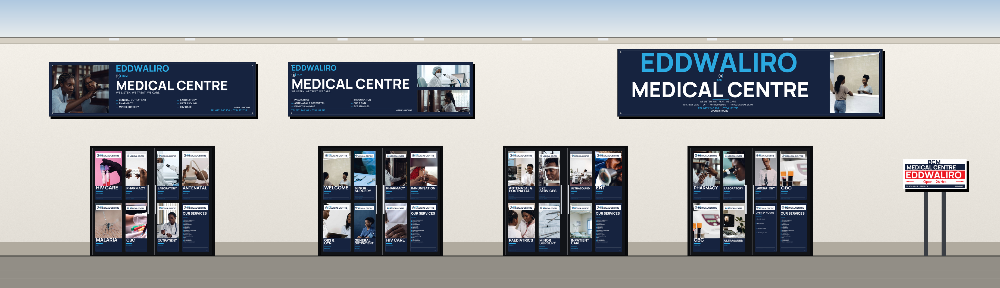
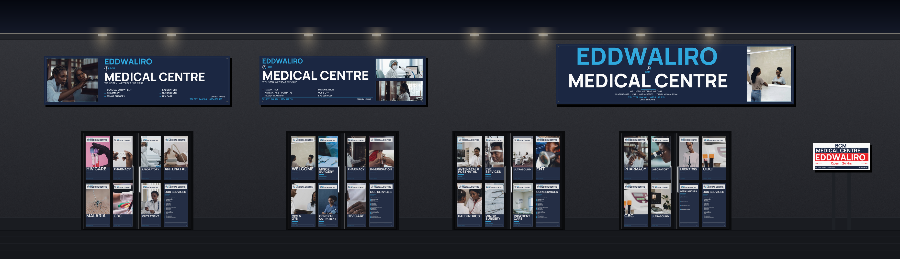
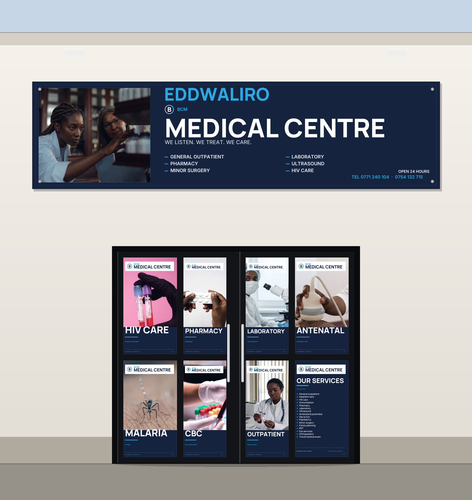
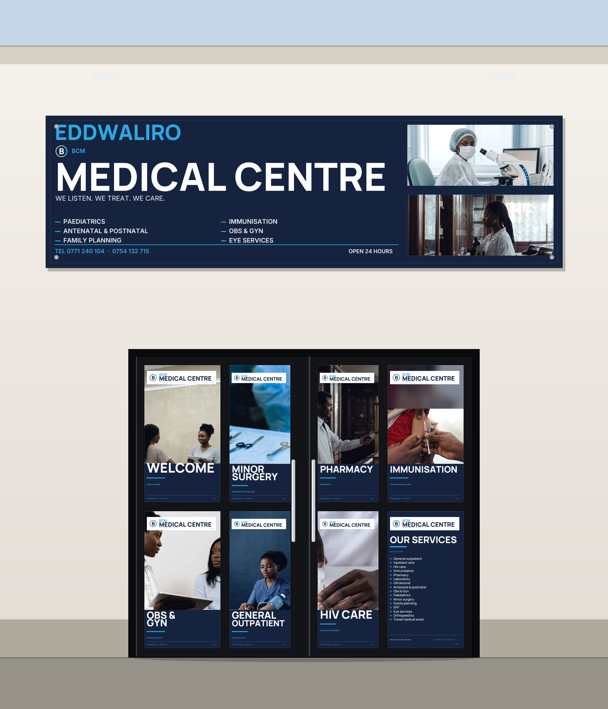
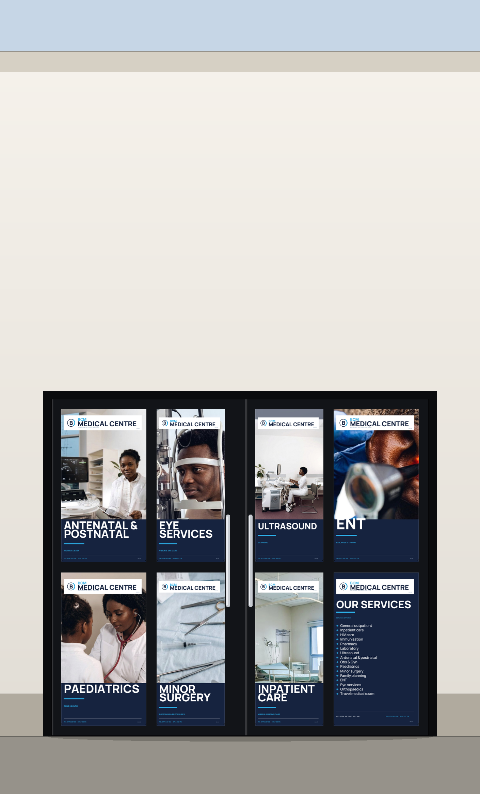
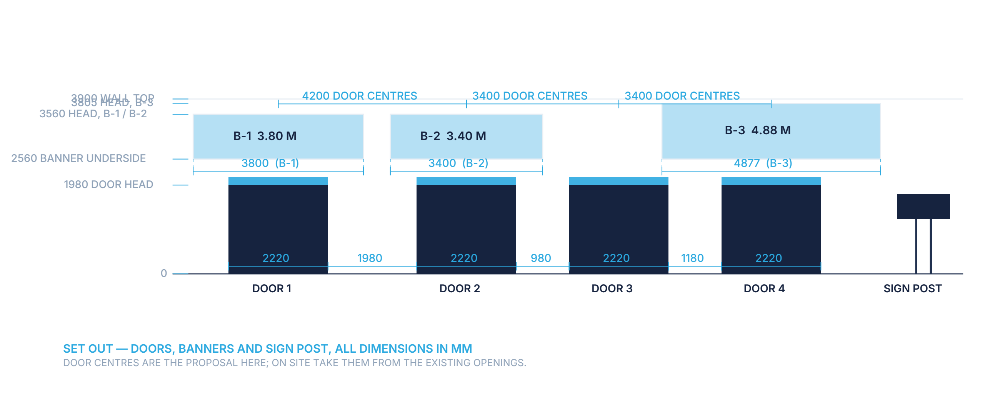

Each doorway




| File | What it is |
|---|---|
| BCM-Premises.pdf | Six pages — the front day and night, each doorway, the set-out drawing |
| in-place.html | One self-contained page — the images travel inside the file, so it opens anywhere, even where the folder is missing |
| BCM-Premises-Package.zip | The elevations and the proof, as a zip |
Door centres, wall heights and the 2560 mm banner underside are proposals drawn from the artwork's own dimensions — confirm them against the building. The artwork itself is unchanged: this page only shows it in place.